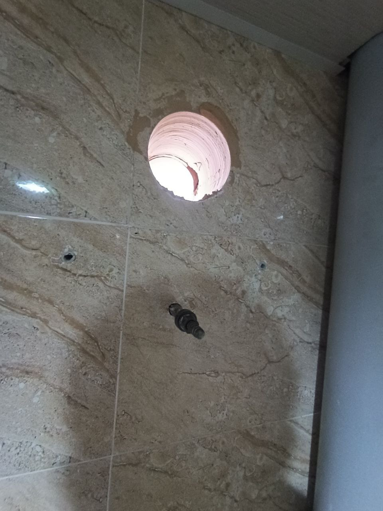
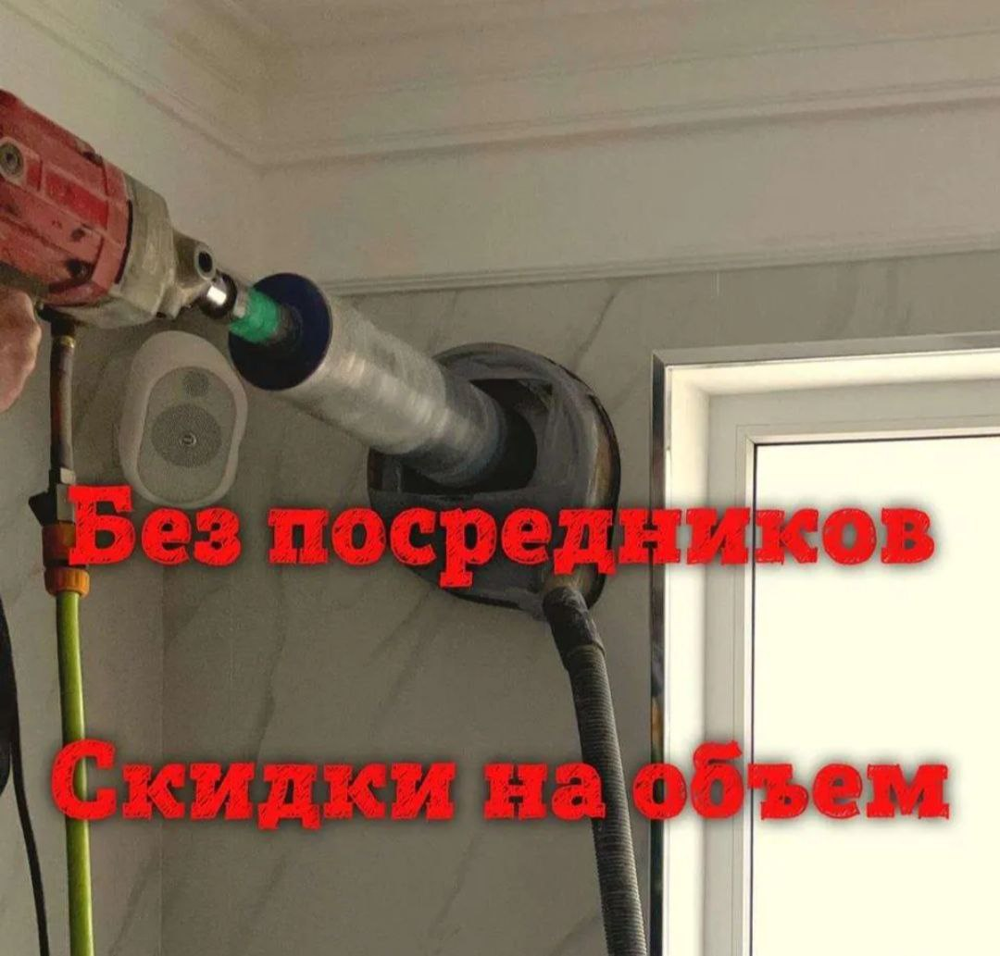
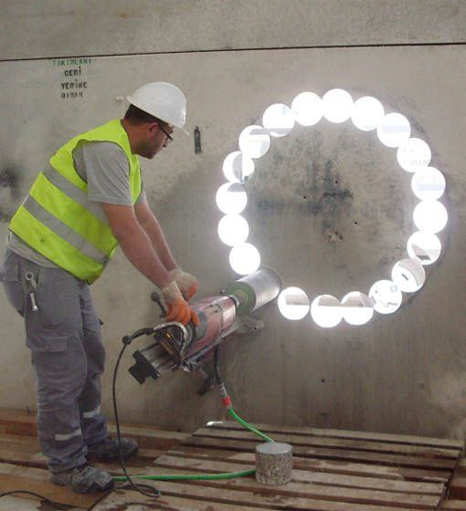
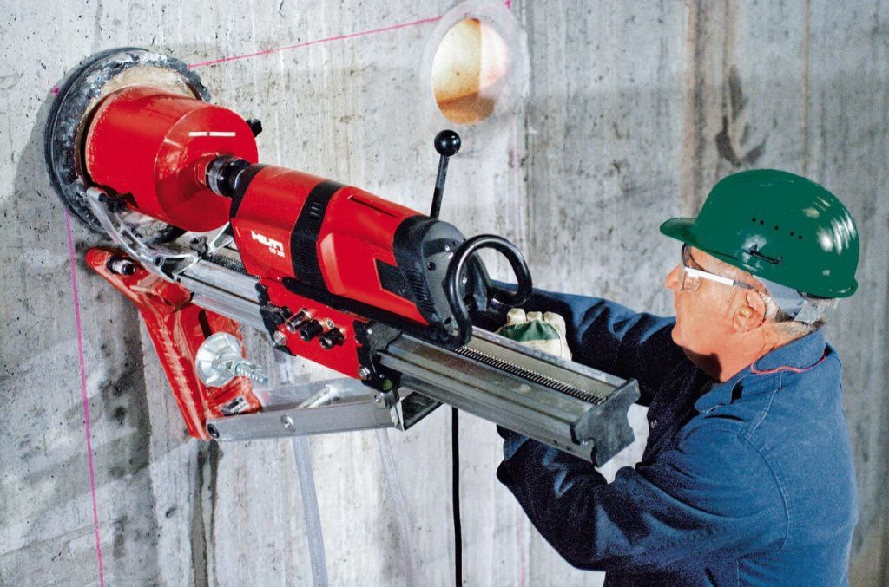

Toshkent bo‘ylab tez va sifatli xizmat
Beton devorlarda professional teshik ochish
G‘isht devorlarni changsiz burg‘alash
Konditsioner uchun devor teshish
Ventilyatsiya tizimlari uchun teshik




Toshkent shahri